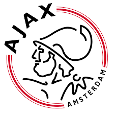

Amsterdamsche Football Club "Ajax", kortweg AFC Ajax of gewoon Ajax, is een Nederlandse profvoetbalclub uit Amsterdam.
De club is opgericht op 18 maart 1900 en is een van de drie traditionele topclubs in Nederland.
Sinds de oprichting van de Eredivisie speelt Ajax onafgebroken in deze hoogste divisie.
Op de UEFA-ranglijst van beste clubs in Europa staat AFC Ajax in het seizoen 2019/20 op 10 september 2019 als beste Nederlandse club op 21e plaats met 60.500 punten. Sinds 1996 speelt de club haar thuiswedstrijden in de Johan Cruijff ArenA.
Ajax slaagde er als een van de weinige Europese topclubs in om samen met Manchester United, Chelsea, Juventus en Bayern München, alle drie de UEFA-hoofdcompetities (Europacup I / UEFA Champions League, Europacup II, en UEFA Cup / UEFA Europa League) te winnen.
Ajax staat tevens bekend als de club die de eerst georganiseerde UEFA Super Cup in 1972 won door het Schotse Glasgow Rangers te verslaan en won als eerste club ooit de International Football Cup in 1962 door winst in de finale tegen Feijenoord, zoals Feyenoord destijds heette.
